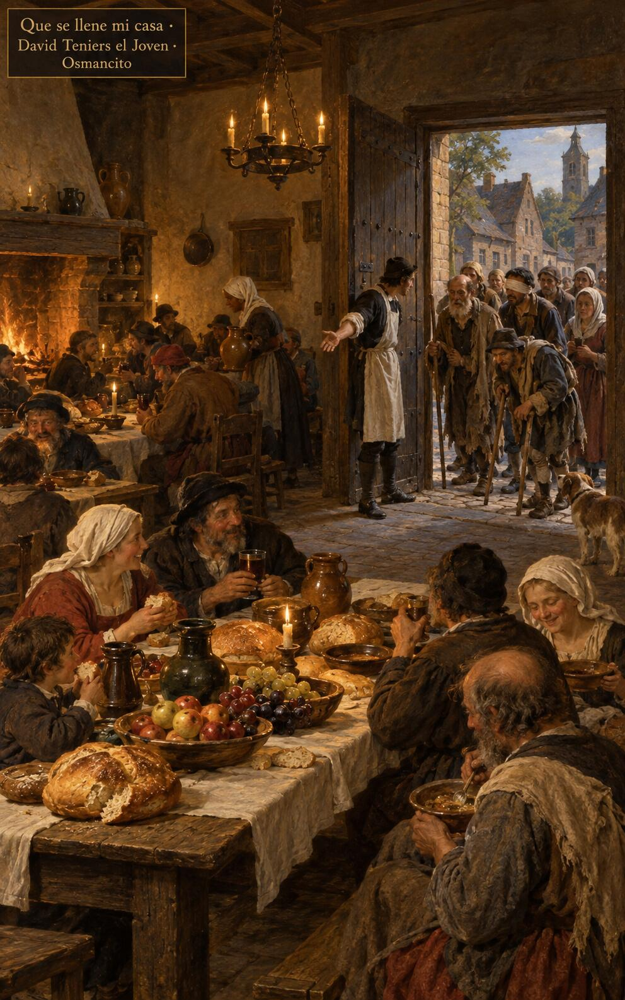
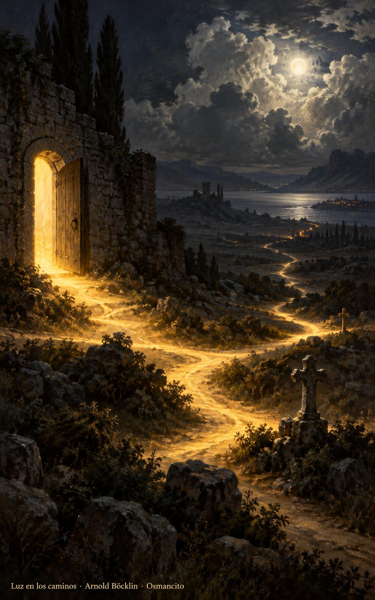
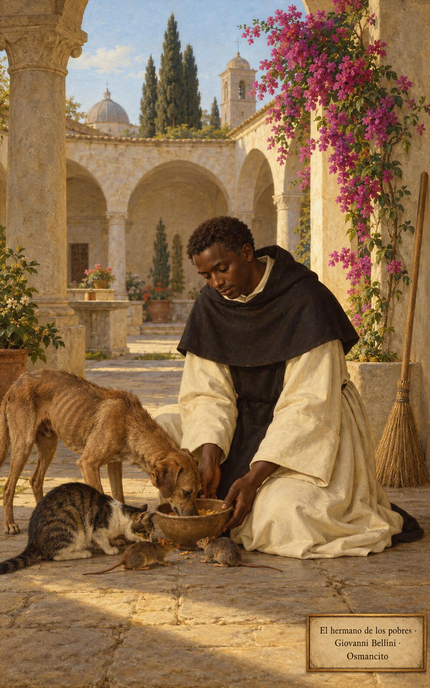

3 de noviembre de 2026
¡Buenos días!
Todavía hay lugar
24
Los pobres comerán hasta saciarse y alabarán al Señor los que lo buscan: su corazón ha de vivir para siempre.
Salmo 21,27. Fuente
Que no nos aferremos a lo que somos: el que se anonadó fue exaltado, y toda rodilla se dobla ante su nombre. Que oigamos la invitación al banquete sin poner excusas de campos, bueyes o bodas. Que salgamos a las plazas y a los caminos a buscar a los pobres, los cojos y los ciegos, para que la casa se llene y los hambrientos coman hasta saciarse, y alabemos juntos al Señor que los busca.

- El criado abre la puerta del banquete a los pobres, los cojos y los ciegos: Lucas 14 manda salir a las plazas y a los caminos para que la casa se llene.

- La luz de la puerta abierta corre por senderos y veredas hasta el horizonte: la invitación alcanza los caminos más lejanos.
¡Feliz martes 3 de noviembre!
😊🙋♂
San Martín de Porres, religioso
Que nos alegremos siempre, sin inquietarnos por nada, como el hermano Martín, que barrió, curó y compartió su plato con los más pobres. Que nuestro corazón no sea ambicioso, sino tranquilo como un niño en brazos de su madre. Que amemos a Dios con toda el alma y al prójimo como a nosotros mismos, y que en esa paz humilde se quede a vivir para siempre junto al Señor, paz de los pequeños y sencillos.

- El fraile comparte su escudilla con el perro, el gato y los ratones: Martín de Porres amó al prójimo hasta en las criaturas más pequeñas.
¡Feliz memoria de san Martín de Porres!
© 2026 Osmancito